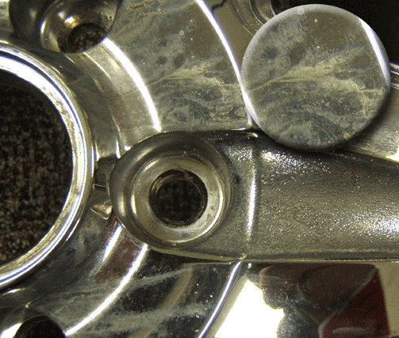
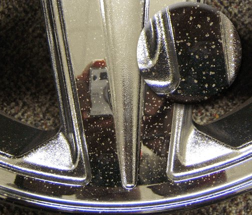
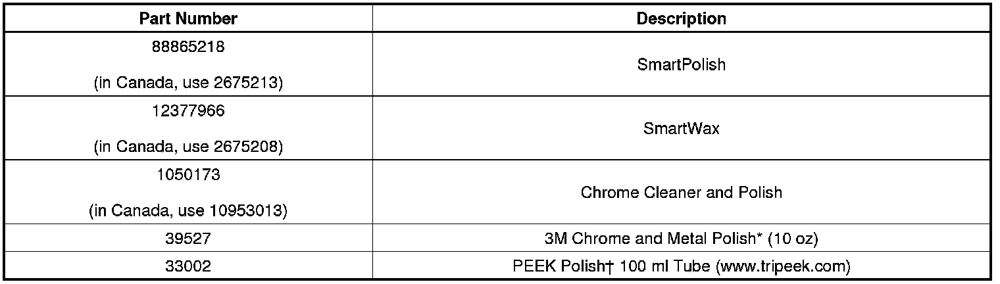

Wheels - Chromed Aluminum Wheel Staining/Pitting/Corrosion
INFORMATIONBulletin No.: 00-03-10-002G
Date: March 04, 2013
Subject: Chemical Staining, Pitting, Corrosion and/or Spotted Appearance of Chromed Aluminum Wheels
Models:
2013 and Prior GM Passenger Cars and Trucks
Supercede:
This bulletin is being revised to add the 2013 model year and update the Parts Information. Please discard Corporate Bulletin Number 00-03-10-002F (Section 03 - Suspension).
Important
You may give a copy of this bulletin to the customer.
What is Chemical Staining of Chrome Wheels
Figure 1

Chemical staining in most cases results from acid based cleaners (refer to Figure 1 for an example). These stains are frequently milky, black, or greenish in appearance. They result from using cleaning solutions that contain acids on chrome wheels. Soap and water is usually sufficient to clean wheels.
If the customer insists on using a wheel cleaner they should only use one that specifically states that it is safe for chromed wheels and does not contain anything in the following list. (Dealers should also survey any products they use during prep or normal cleaning of stock units for these chemicals.)
- Ammonium Bifluoride (fluoride source for dissolution of chrome)
- Hydrofluoric Acid (directly dissolves chrome)
- Hydrochloric Acid (directly dissolves chrome)
- Sodium Dodecylbenzenesulfonic Acid
- Sulfamic Acid
- Phosphoric Acid
- Hydroxyacetic Acid
Notice
Many wheel cleaner instructions advise to take care to avoid contact with painted surfaces. Most customers think of painted surfaces as the fenders, quarter panels and other exterior sheet metal. Many vehicles have painted brake calipers. Acidic wheel cleaners may craze, crack, or discolor the paint on the brake calipers. Damage from wheel cleaners is not covered under the vehicle new car warranty. Soap and water applied with a soft brush is usually all that is required to clean the calipers.
Whenever any wheel cleaner is used, it must be THOROUGHLY rinsed off of the wheel with clean, clear water. Special care must be taken to rinse under the hub cap, balance weights, wheel nuts, lug nut caps, between the wheel cladding and off the back side of the wheel. Wheels returned to the Warranty Parts Center (WPC) that exhibit damage from wheel cleaners most often have the damage around and under the wheel weight where the cleaner was incompletely flushed away.
Notice
Do not use cleaning solutions that contain hydrofluoric, oxalic and most other acids on chrome wheels (or any wheels).
If the customer is unsure of the chemical make-up of a particular wheel cleaner, it should be avoided.
For wheels showing signs of milky staining from acidic cleaners, refer to Customer Assistance and Instructions below.
Warranty of Stained Chrome Wheels
Stained wheels are not warrantable. Most acid based cleaners will permanently stain chrome wheels. Follow-up with dealers has confirmed that such cleaners were used on wheels that were returned to the Warranty Parts Center (WPC). Any stained wheels received by the WPC will be charged back to the dealership. To assist the customer, refer to Customer Assistance and Instructions below.
Pitting or Spotted Appearance of Chrome Wheels
Figure 2

A second type or staining or finish disturbance may result from road chemicals, such as calcium chloride used for dust control of unpaved roads. The staining will look like small pitting (refer to Figure 2). This staining will usually be on the leading edges of each wheel spoke, but may be uniformly distributed. If a vehicle must be operated under such conditions, the chrome wheels should be washed with mild soap and water and thoroughly rinsed as soon as conveniently possible.
Important
Road chemicals, such as calcium chloride used for dust control of unpaved roads, can also stain chrome wheels. The staining will look like small pitting. This staining will usually be on the leading edges of each wheel spoke. This is explained by the vehicle traveling in the forward direction while being splashed by the road chemical. If a vehicle must be operated under such conditions, the chrome wheels should be washed with mild soap and water and thoroughly rinsed as soon as conveniently possible.
Warranty of Pitted or Spotted Chrome Wheels
Wheels returned with pitting or spotting as a result of road chemicals may be replaced one time. Damage resulting from contact with these applied road chemicals is corrosive to the wheels finish and may cause damage if the wheels are not kept clean.
Important
Notify the customer that this is a one time replacement. Please stress to the customer the vital importance of keeping the wheels clean if they are operating the vehicle in an area that applies calcium chloride or other dust controlling chemicals! "GM of Canada" dealers require prior approval by the District Manager - Customer Care and Service Process (DM-CCSP).
"Stardust" Corrosion of Chrome Wheels
Figure 3

A third type of finish disturbance results from prolonged exposure to brake dust and resultant penetration of brake dust through the chrome. As brakes are applied hot particles of brake material are thrown off and tend to be forced through the leading edge of the wheel spoke windows by airflow. These hot particles embed themselves in the chrome layer and create a small pit. If the material is allowed to sit on the wheel while it is exposed to moisture or salt, it will corrode the wheel beneath the chrome leaving a pit or small blister in the chrome.
Heavy brake dust build-up should be removed from wheels by using GM Chrome Cleaner and Polish, P/N 1050173 (in Canada use 10953013). For moderate cleaning, light brake dust build-up or water spots use SmartPolish, P/N 88865218 (in Canada, use 2675213). After cleaning, the wheel should be waxed using SmartWax, P/N 88865229 (in Canada, use 2675208), which will help protect the wheel from brake dust and reduce adhesion of any brake dust that gets on the wheel surface. For general maintenance cleaning, PEEK Metal Polish+ may be used. It will clean and shine the chrome and leave behind a wax coating that may help protect the finish.
Warranty of Stardust Corroded Chrome Wheels
Wheels returned with pitting or spotting as a result of neglect and brake dust build-up may be replaced one time.
Important
Notify the customer that this is a one time replacement. Please stress to the customer the vital importance of keeping the wheels clean and free of prolonged exposure to brake dust build-up. "GM of Canada" dealers require prior approval by the District Manager - Customer Care and Service Process (DM-CCSP).
Customer Assistance and Instructions
GM has looked for ways customers may improve the appearance of wheels damaged by acidic cleaners. The following product and procedure has been found to dramatically improve the appearance of stained wheels. For wheels that have milky stains caused by acidic cleaners try the following:
Notice
THE 3M CHROME AND METAL POLISH REQUIRED FOR THIS PROCEDURE IS AN EXTREMELY AGGRESSIVE POLISH/CLEANER. THE WHEELS MUST BE CLEANED BEFORE APPLICATION TO AVOID SCRATCHING THE WHEEL SURFACE. THIS PRODUCT WILL REDUCE THE THICKNESS OF THE CHROME PLATING ON THE WHEEL AND IF USED INCORRECTLY OR EXCESSIVELY MAY REMOVE THE CHROME PLATING ALL TOGETHER, EXPOSING A LESS BRIGHT AND BRASSY COLORED SUB-LAYER. FOLLOW INSTRUCTIONS EXACTLY.
1. Wash the wheels with vigorously with soap and water. This step will clean and may reduce wheel staining. Flood all areas of the wheel with water to rinse.
2. Dry the wheels completely.
Notice
Begin with a small section of the wheel and with light pressure buff off polish and examine results. ONLY apply and rub with sufficient force and time to remove enough staining that you are satisfied with the results. Some wheels may be stained to the extent that you may only achieve a 50% improvement while others may be able to be restored to the original lustre. IN ALL CASES, only apply until the results are satisfactory.
3. Apply 3M Chrome and Metal Polish #39527* with a clean terry cloth towel. As you apply the polish, the staining will be diminished.
4. When dry, buff off the polish with a clean portion of the towel.
5. Repeat application of the 3M Chrome and Metal Polish until satisfied with the results. If continued applications fail to improve the appearance further discontinue use.
This procedure will improve the appearance of the wheels and may, with repeated applications, restore the finish dramatically. For wheels that exhibit spotting from road chemicals the above procedure may marginally improve the condition but will not restore the finish or remove the pitting. In this type of staining the wheel finish has actually been removed in spots and no manner of cleaning will restore the finish.
*We believe this source and their products to be reliable. There may be additional manufacturers of such products/materials. General Motors does not endorse, indicate any preference for or assume any responsibility for the products or material from this firm or for any such items that may be available from other sources.
Parts Information

*This product is currently available from 3M. To obtain information for your local retail location please call 3M at 1-888-364-3577.
*This product is currently available from Tri-Peek International. To obtain information for your local retail location please call Tri-Peek at 1-877-615-4272 or at www.tripeek.com.

Disclaimer